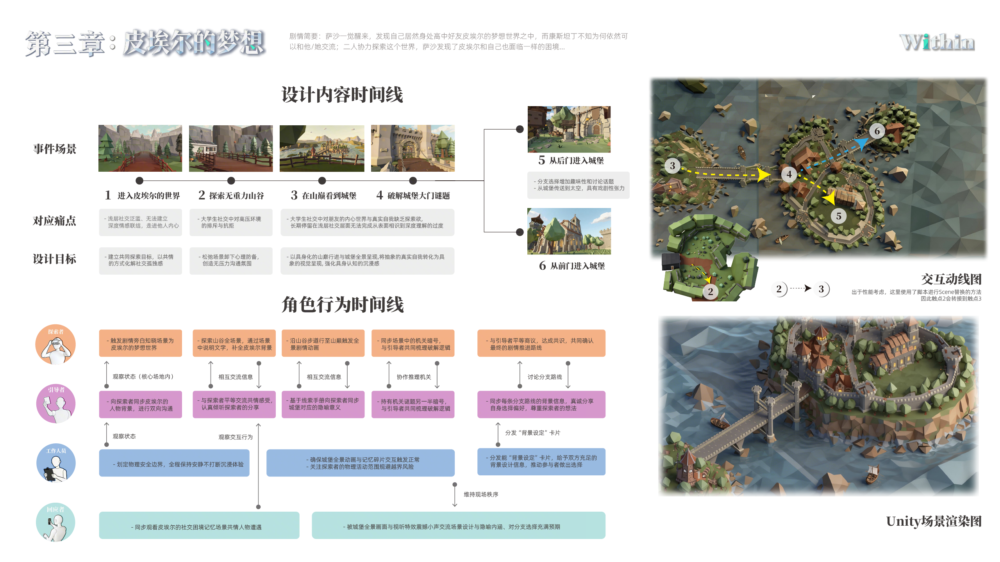

事件场景
从森林、城堡到更抽象的梦境段落，第三章通过空间切换不断提高协作密度，让用户在连续变换的环境里重新分配注意力与行动。
第三章把体验推进到真正复杂的梦境层次之中。森林、城堡与更抽象的空间段落不断切换， 信息被拆分给不同角色与场景，用户必须在不稳定的环境里持续判断、沟通，并通过更深度的协同完成共创。

统一主图承载第三章的时间线、角色行为与交互动线，通过热点切换查看每一块内容在复杂协作中的职责。
从森林、城堡到更抽象的梦境段落，第三章通过空间切换不断提高协作密度，让用户在连续变换的环境里重新分配注意力与行动。
信息被拆分到不同角色与场景中，用户必须持续判断、沟通与共同决策，单靠个人理解已经无法稳定推进体验。
把“能配合”推进为“能理解”，让协作从轻量互动进入真实的关系深化阶段，促成更深层的共创判断与互相体会。